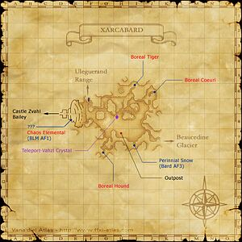

Level 75 reference · Zenith rules
|


Walkthrough
- Maat asks you to retrieve three pieces of Frigicite from Xarcabard.
- The Frigicite are found in caves at I-6, J-7, and G-10. Each piece of Frigicite is guarded by a NM that has True Sight and True Hearing. Defeat each NM, and quickly run in and touch the ??? to receive the rewards (key items):
- Boreal Tiger. The reward is a Round Frigicite.
- Boreal Coeurl. The reward is a Square Frigicite.
- Boreal Hound. The reward is a Triangular Frigicite.
- These NMs have incredibly fast respawn rates (around 15 seconds). Touch the ??? quickly.
- If the NMs aggro you, they'll follow you for some seconds, then they'll immediately start casting a spell. Take this time to run out of their range, because if you do, they'll lose hate and they'll return to their spawn point.
- Once you have retrieved the three pieces of Frigicite, simply return to Maat to complete the quest.
- Can be soloed by 71+ Summoner with decent gear. Can be soloed by a 75NIN, 75DRG, 75RDM, 75DRK/NIN or 75WHM/NIN.
Game DescriptionClient: Maat (Grand Duke Palace, Ru'Lude Gardens)
|
|
Adapted from Eden Wiki: Atop the Highest Mountains · Contributors and history · CC BY-SA 4.0. Revision 10547. Layout, links and optional background text adapted for Zenith.